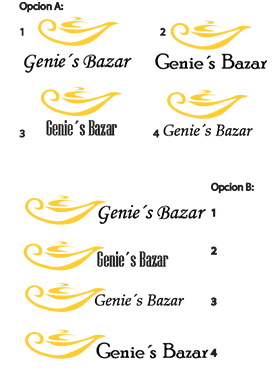
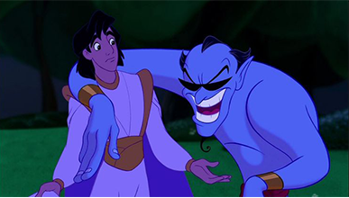
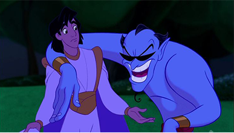
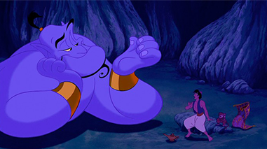
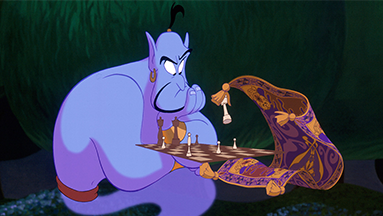

Marca
Para nuestro empredimiento de bazar, se realizó un isotipo que represente correctamente la empresa y su vinculación con el personaje del Genio. Es por ello que se hicieron varias propuestas hasta llegar a la que actualmente vemos al comienzo de la página.  El isotipo final cuenta con un diseño sintetizado de la lámpara del genio, de colores representativos del objeto y del personaje. El isotipo se encuentra acompañado por el nombre del emprendimiento.
Tipografía
Para seleccionar las tipografías correctas para el desarrollo del emprendimiento se realizaron varias pruebas hasta encontrar la correcta. La primera tipografía utilizada es Libre Baskerville, que al ser una tipografía Serif, ayuda a hacer la vinculación visual entre la tipografía, el mundo de Aladdín, del Genio y el bazaar.
ABCDEFGHIJKLMNOPQRSTVUXWYZ abcdefghijklmnopqrstvuxwyz1234567890
 

Paleta Cromática
La paleta cromática que se aplicó fue basada en los colores del Genio,como a su vez inspirados por la película de Aladdín.
 